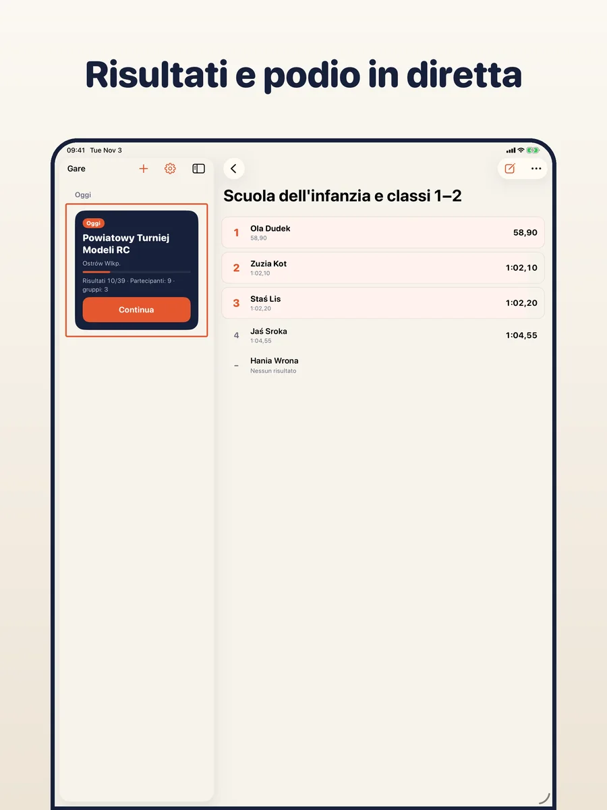
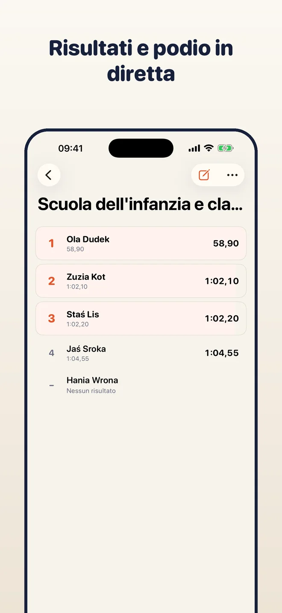
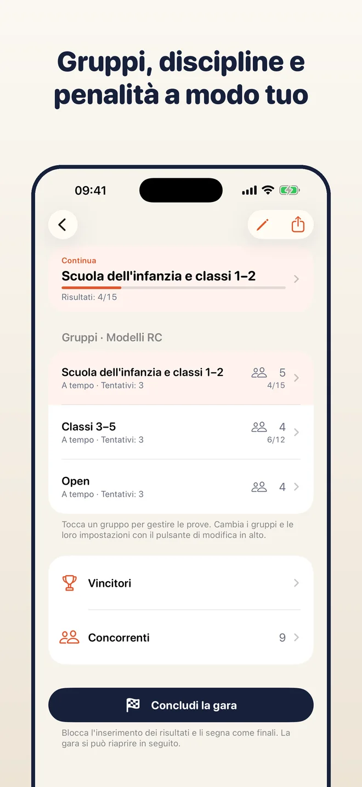
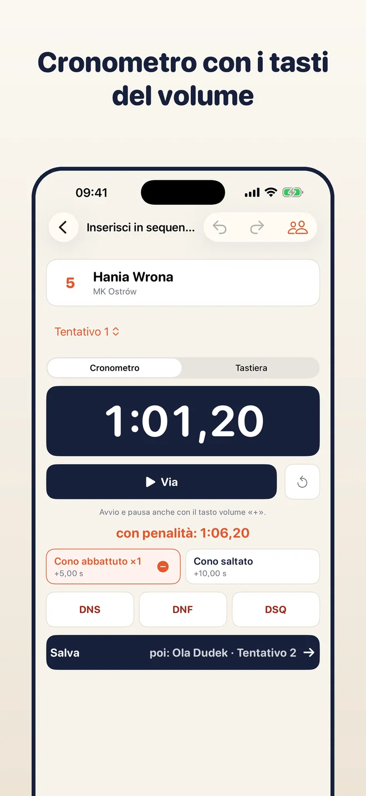
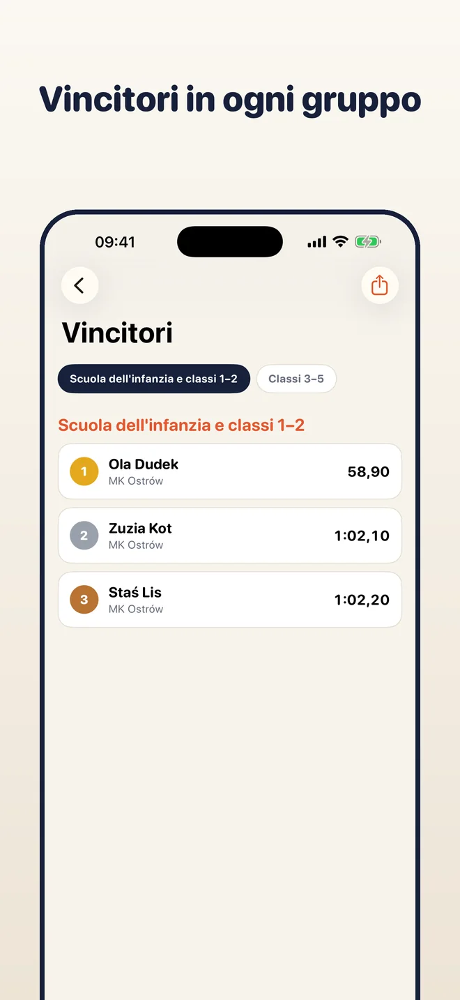
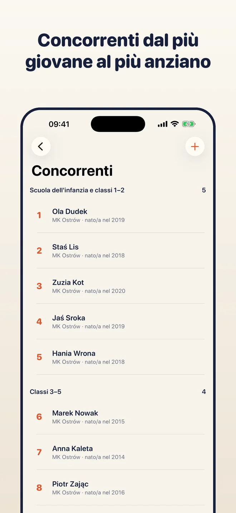

Su iPhone, iPad e Mac
Un'app, un acquisto: gratis su tutti e tre. L'iPhone cronometra le prove, il Mac o l'iPad mostrano tutta la gara. Con la sincronizzazione iCloud (facoltativa) condividono gli stessi dati.



Crea i gruppi, aggiungi i partecipanti, cronometra ogni prova e inserisci i risultati. Posizioni, parità, classifica a squadre e generale si aggiornano da sole, pronte per un PDF, un CSV o un'immagine del podio. Tutto resta sul tuo dispositivo.
iPhone · iPad · Mac
Scegli un tipo di gara e aggiungi i gruppi, ad esempio per età oppure Open. Ogni gruppo ha le sue prove, il suo modo di contare e le sue penalità.

L'app mostra chi è il prossimo. Avvia il cronometro, aggiungi una penalità con un tocco e il tempo finisce direttamente nel risultato.

Classifica, parità e vincitori sempre aggiornati. Esporta un PDF, un CSV, un'immagine del podio per i social o un backup di tutta la gara.
Prova migliore, somma delle migliori, media, N di M turni, voti della giuria, settori, fasi. Esempi pronti e regole personalizzate.
Modelli RC, pesca, sport dei pompieri e altro. Una persona può gareggiare in più gruppi, ad esempio nel suo e in Open.
Avvio e pausa con un tocco o con il tasto volume +. Il tempo finisce nel risultato e le penalità sono pulsanti sotto.
Il numero di partenza stabilisce l'ordine nel gruppo. Sorteggialo o trascina per cambiarlo; il prossimo partecipante è sempre visibile.
Posizioni, parità e risultati incompleti si calcolano mentre inserisci. Vincitori per gruppo, classifica a squadre e generale.
Concludi la gara per segnare i risultati come definitivi e riaprila se serve correggere qualcosa.
Condividi un foglio dei risultati, un foglio di calcolo, un'immagine del podio o un backup .tallyboard di tutta la gara.
Nessun account, nessuna pubblicità e nessun nostro server. I risultati restano sul tuo dispositivo, o nel tuo iCloud se attivi la sincronizzazione.
Un'app, un acquisto: gratis su tutti e tre. L'iPhone cronometra le prove, il Mac o l'iPad mostrano tutta la gara. Con la sincronizzazione iCloud (facoltativa) condividono gli stessi dati.



Tallyboard non ha paywall né limiti. Se ti è utile, puoi sostenere lo sviluppo con una mancia facoltativa.
Le mance sono acquisti singoli gestiti da Apple. L'app non vede mai i tuoi dati di pagamento.
Le regole pronte sono esempi basati su regolamenti comuni. Non sostituiscono il regolamento ufficiale della tua gara; l'organizzatore è responsabile delle regole e dei risultati definitivi.
No. Non ci sono account né pubblicità.
Sul tuo dispositivo. Se attivi la sincronizzazione iCloud, anche nel tuo iCloud privato. Non abbiamo un server né accesso ai tuoi dati.
Per tutte quelle in cui i partecipanti gareggiano a turno e il posto dipende da tempo, punti o voti: RC, pesca, sport dei pompieri, gare con giuria, autocross e altro. Se le regole pronte non vanno, crei le tue.
Sì. Attiva la sincronizzazione iCloud nelle Impostazioni oppure sposta una gara con un file di backup .tallyboard.
Polacco, inglese, tedesco, spagnolo e italiano.
Gratis per iPhone, iPad e Mac. Senza account.
Scarica dall'App Store